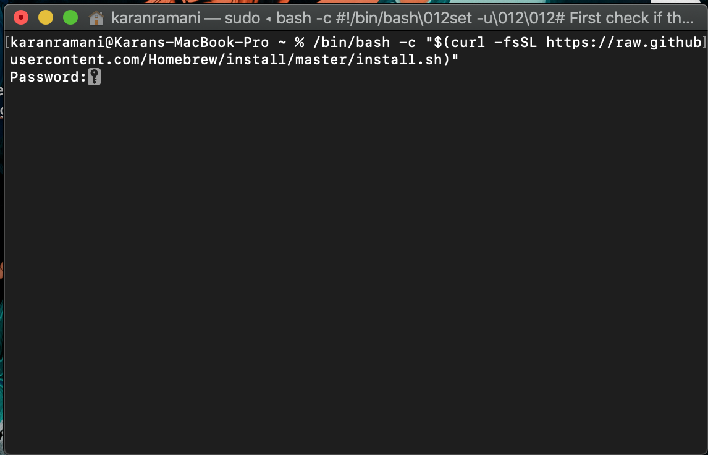
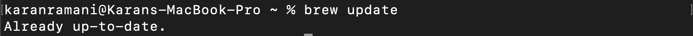
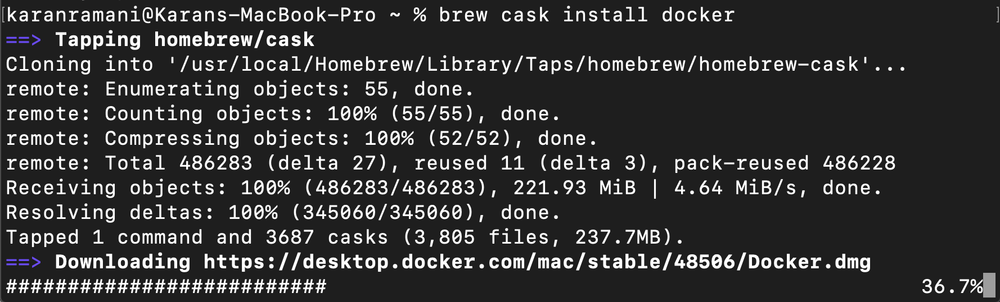
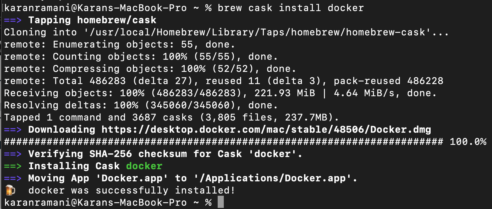
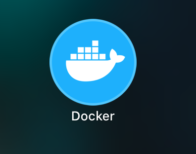
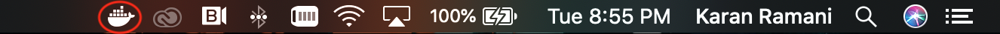
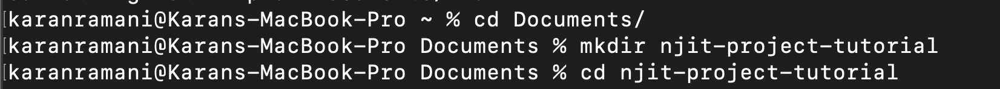
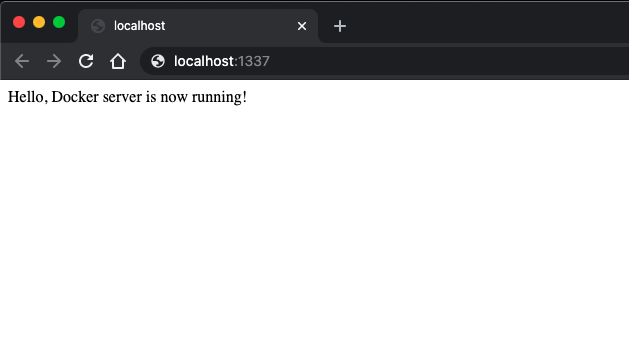

A tutorial on how to setup a web server on your local computer using docker
1.) In order to run docker server on local machine, first of all we need to install docker.
Let’s begin with installing home brew which helps as a resource to find and install latest version of Docker directly from your terminal
Copy and paste below link to your terminal and once pasted the prompt message will ask for your password.
/bin/bash -c "$(curl -fsSL https://raw.githubusercontent.com/Homebrew/install/master/install.sh)”

2.) Once the install is complete type in below command on terminal.
brew update

3.) Once the message comes as “Already up-to-date” you are now ready to install docker using brew. Type in below command to get started with installing docker.
brew cask install docker
This task will take a minute or two depending on the internet connection so please be patient.

4.) Once the docker is installed you will be able to see the docker icon in the applications folder. Before that we need to make sure if we have node installed in the machine as it helps run things within docker.

Type in below command to get node installed.
brew install node
5.) Once Node is installed double click on that docker file in the applications folder to setup the docker in your machine.

6.) Once Docker is open and running the logo will come up on the top bar as shown below.

7.) Now we can start setting up the node application this is a procedure that is similar with any other applications.
Head over to the folder you want to create your application in, in below case the location is in the Documents/njit-project-tutorial

Type in below commands to get Node set-up
npm init --yes
Or
npm install
&
touch index.js
*if npm is not available, simply type below command before step 7
brew install npm
8.) Once Completed, the folder will have two .json files. Go ahead and create and index file named as “index.js” by typing:
touch index.js
9.) Once created, edit the file by typing vi index.js
10.) press “I” to edit the file and insert below text.
const http = require(‘http’);
const server = http.createServer((request, response) => {
response.end(‘Hello, Docker server is now running!’);
});
server.listen(1337);
11.) To save and exit the file, press “esc” button and type in “:wq”. This will save and exit out of the file.
12.) Now let’s create a docker file by typing:
touch Dockerfile
13.) Once created enter into the Dockerfile by typing vi Dockerfile and insert below lines by pressing “I”
FROM node:carbon
WORKDIR /src
COPY . /src/
CMD [“node, “index.js”]
EXPOSE 1337
14.) Once completed enter below lines to create the webapplication.
docker build -t webapp .
docker run -p 1337:1337 webapp
15.) After completion you can check by heading to a browser and typing in localhost:1337 in the url bar.
localhost:1337
